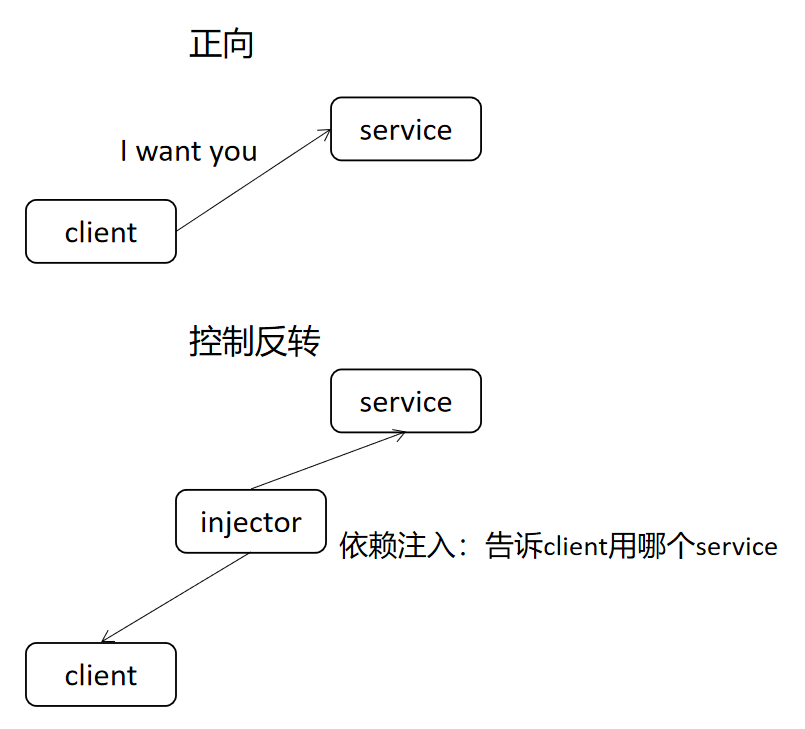
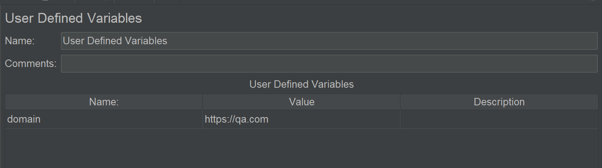

本书作者：测试开发刚哥，文章版权归个人所有，未经授权请勿转载。
tep是一款测试工具，在pytest测试框架基础上集成了第三方包，提供项目脚手架，帮助以写Python代码方式，快速实现自动化项目落地。
在tep项目中，自动化测试用例都是放到tests目录下的，每个.py文件相互独立，没有依赖，1个文件即1条用例，彼此分离。
虽然用例也能相互引用，但是除非万不得已，一般不建议这么做，牵一发动全身，后期维护困难。
用例的代码编写，思路是从上往下的，和pytest/unittest/script常规写法无异，不会有学习成本，一般也不会有问题。有成本有问题的可能是环境变量和fixtures，因为tep做了封装，提供了依赖注入的共享方式，fixture又是pytest较难理解的知识点，所以有必要通过本文来讲讲tep环境变量、fixtures、用例三者之间的关系，帮助理解，以便更灵活顺手的借助tep实现pytest自动化项目。
假如不用环境变量和fixtures
假如不用环境变量和fixtures，是完全可以的！比如，在tests下新建脚本login_test.py：
from tep.client import request
def test():
response = request("post",
url="https://qa.com/api/users/login",
headers={"Content-Type": "application/json"},
json={
"username": "admin",
"password": "123456",
}
)
assert response.status_code < 400
请求接口https://qa.com/api/users/login，断言响应状态码小于400。问题来了：url固定，假如需要切换两个环境qa和release，该怎么办？
参数化
无论是做自动化测试还是性能测试，都会接触到参数化这个词。它是指把代码中的固定数据（硬编码）定义成变量，让每次运行时数据不一样，固定数据变为动态数据。动态数据的来源是变量、数据库、外部文件等。动态数据的类型一般是常量的字符串，也可以是函数，比如JMeter的函数助手，也可以是依赖注入，比如pytest的fixture。
依赖注入的fixture
“依赖注入是控制反转（IoC， Inversion of Control）的一种技术形式”，这句话出自维基百科，我也不知道什么意思，画个图简单表达下：

意思是，给client一个injector，client不需要做什么，就能用到service。
pytest的fixture实现了依赖注入，允许我们在不修改测试代码的情况下，引入fixture来额外添加一些东东。
对于url来说，域名是需要做参数化的，不同环境域名不同，所以tep把它做成了fixture，通过函数参数引入：
from tep.client import request
from tep.fixture import *
def test(url): # 引入fixture
response = request("post",
url=url("/api/users/login"),
headers={"Content-Type": "application/json"},
json={
"username": "admin",
"password": "123456",
}
)
assert response.status_code < 400
tep.fixture.url定义如下：
@pytest.fixture(scope="session")
def url(env_vars):
def domain_and_uri(uri):
if not uri.startswith("/"):
uri = "/" + uri
return env_vars.domain + uri
return domain_and_uri
如果一眼就看懂了，恭喜你，如果一眼就看懵了，没关系。我会花功夫把它讲明白，它很关键！
把fixture当变量看
虽然从定义上看，fixture是用def关键字定义的函数，但是理解上把它看做变量就可以了。比如：
import pytest
@pytest.fixture
def name():
return "dongfanger"
一般函数的用法是函数名加小括号，通过name()才能得到"dongfanger"。fixture不一样，以上定义可以理解为：
name = "dongfanger"
把"dongfanger"赋值给name，fixture名 = return值。通过变量name就得到"dongfanger"了。
既然是变量，那么就能随便赋值，str、function、class、object都行。比如在fixture内部定义个函数：
import pytest
@pytest.fixture
def who():
def get_name():
return "dongfanger"
return get_name
理解为把函数名get_name赋值给fixture名变量：
who = get_name
get_name是个函数名，需要加小括号get_name()才能得到"dongfanger"。who也必须通过who()才能得到"dongfanger"。再看tep.fixture.url是不是清楚些了：
@pytest.fixture(scope="session")
def url(env_vars):
def domain_and_uri(uri):
if not uri.startswith("/"):
uri = "/" + uri
return env_vars.domain + uri
return domain_and_uri
理解为把函数名domain_and_uri赋值给fixture名变量：
url = domain_and_uri
使用时通过url("/api")得到域名和uri拼接后的结果。
第2行的def url(env_vars):也有一个参数env_vars，接下来继续解释。
fixture参数是其他fixture
fixture的参数只能是其他fixture。比如：
import pytest
@pytest.fixture
def chinese_name():
return "东方er"
@pytest.fixture
def english_name(chinese_name):
return "dongfanger"
调用english_name，pytest会先执行参数里的其他fixture chinese_name，然后执行自己english_name。
如果把tep.fixture.url拆成两步来看，就很清晰了，第一步：
@pytest.fixture(scope="session")
def url(env_vars):
func = None
return func
第二步：
@pytest.fixture(scope="session")
def url(env_vars):
func = None
def domain_and_uri(uri):
if not uri.startswith("/"):
uri = "/" + uri
return env_vars.domain + uri
func = domain_and_uri
return func
环境变量
tep.fixture.url的参数是另外一个fixture env_vars 环境变量，它的定义如下：
from tep.fixture import *
@pytest.fixture(scope="session")
def env_vars(config):
class Clazz(TepVars):
env = config["env"]
"""Variables define start"""
# Environment and variables
mapping = {
"qa": {
"domain": "https://qa.com",
},
"release": {
"domain": "https://release.com",
}
# Add your environment and variables
}
# Define properties for auto display
domain = mapping[env]["domain"]
"""Variables define end"""
return Clazz()
只看中间注释"""Variables define start"""到"""Variables define end"""部分即可。url参数化的域名就在这里，mapping字典建立了环境和变量之间的映射，根据不同的环境key，获取不同的变量value。
configfixture的作用是读取conf.yaml文件里面的配置。
参数化的方式很多，JMeter提供了4种参数化方式，tep的fixture env_vars借鉴了JMeter的用户自定义变量：

env_vars.put()和env_vars.get()借鉴了JMeter BeanShell的vars.put()和vars.get()。
实例：测试多个网址
讲到最后，形成了思路，通过实际的例子，看看环境变量、fixtures、用例是怎么用起来的，加深下印象。假如qa环境有2个网址，学校端和机构端，脚本都需要用到。
第一步修改env_vars，编辑fixture_env_vars.py：
"""Variables define start"""
# Environment and variables
mapping = {
"qa": {
"domain": "https://qa.com",
"domain_school": "https://school.qa.com", # 新增
"domain_org": "https://org.qa.com" # 新增
},
"release": {
"domain": "https://release.com",
"domain_school": "https://school.release.com" # 新增
"domain_org": "https://org.release.com" # 新增
}
# Add your environment and variables
}
# Define properties for auto display
domain = mapping[env]["domain"]
domain_school = mapping[env]["domain_school"] # 新增
domain_org = mapping[env]["domain_org"] # 新增
"""Variables define end"""
添加了6行代码，定义了env_vars.domain_school和env_vars.domain_org。
第二步定义fixtures，新建fixture_url.py：
@pytest.fixture(scope="session")
def url_school(env_vars):
def domain_and_uri(uri):
if not uri.startswith("/"):
uri = "/" + uri
return env_vars.domain_school + uri
return domain_and_uri
@pytest.fixture(scope="session")
def url_org(env_vars):
def domain_and_uri(uri):
if not uri.startswith("/"):
uri = "/" + uri
return env_vars.domain_org + uri
return domain_and_uri
参照tep.fixture.url，修改env_vars.domain为env_vars.domain_school和env_vars.domain_org，新增了2个fixture url_school和url_org。
更进一步，也许会定义fixture login_school和login_org，灵活选择。
小结
本文循序渐进的讲解了tep环境变量、fixtures和用例之间的关系，重点对tep.fixture.url进行了解释，只要理解了它，整体关系就很清楚了。之所以要用fixture，原因一是多人协作共享，我们需要用别人写好的函数，复用返回值，有些同学习惯定义函数参数，参数不变还好，万一哪天改了，别人引用的用例会全部报错，fixture很好的限制了这一点，它默认是不能传参的，虽然可以通过定义内部函数来实现传参，但是并不推荐这么做，宁愿增加冗余代码，定义多个fixture，也比代码耦合度高好一些。原因二是import的问题，pytest会自动查找conftest.py里的fixture，tep会进一步自动查找fixtures下的fixture导入到conftest.py，不需要import就能使用，减少了import代码，避免了可能会出现的循环导入问题。